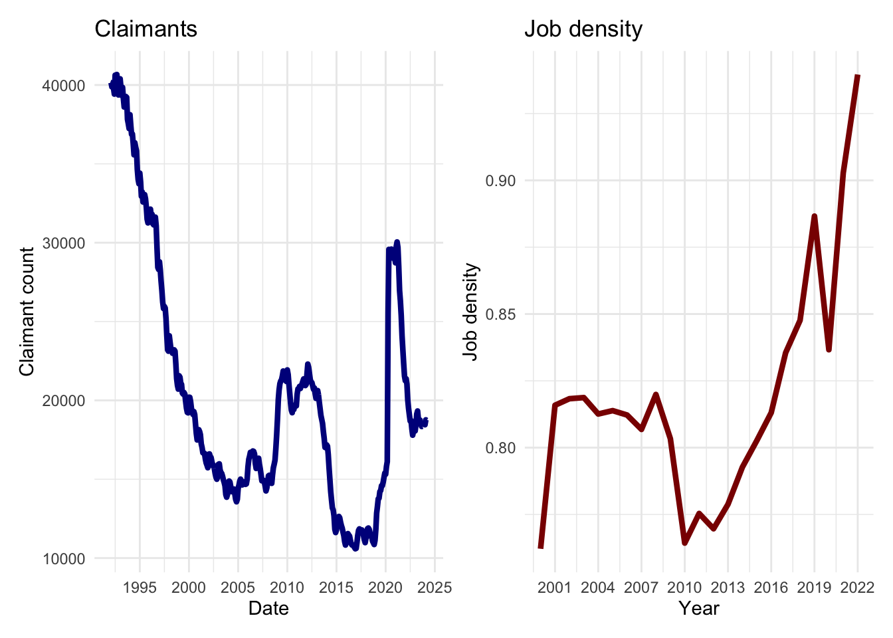
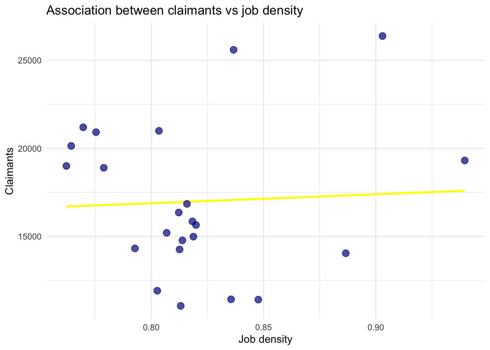
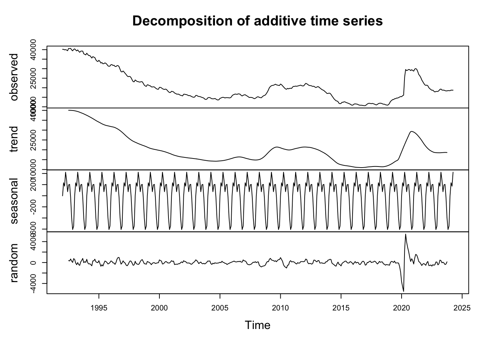
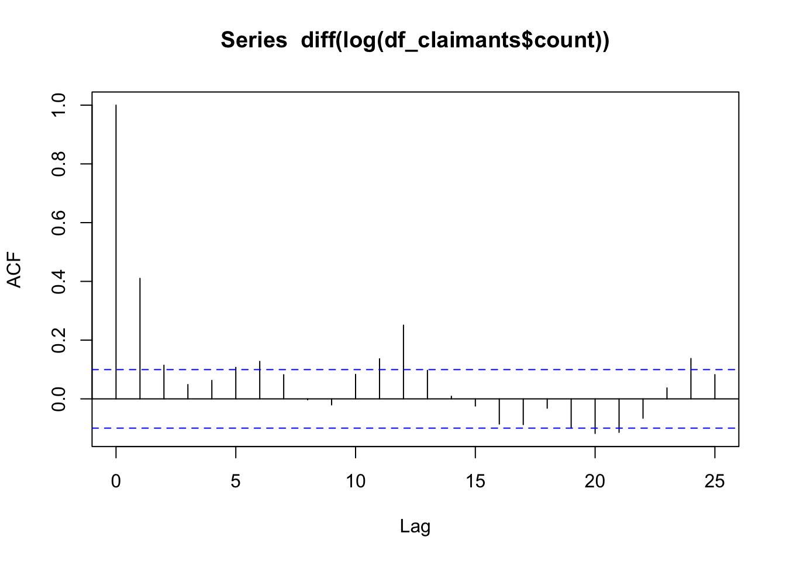
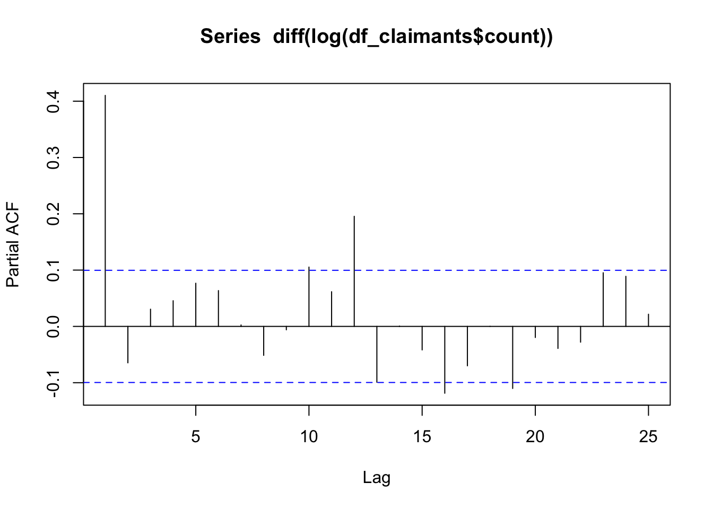
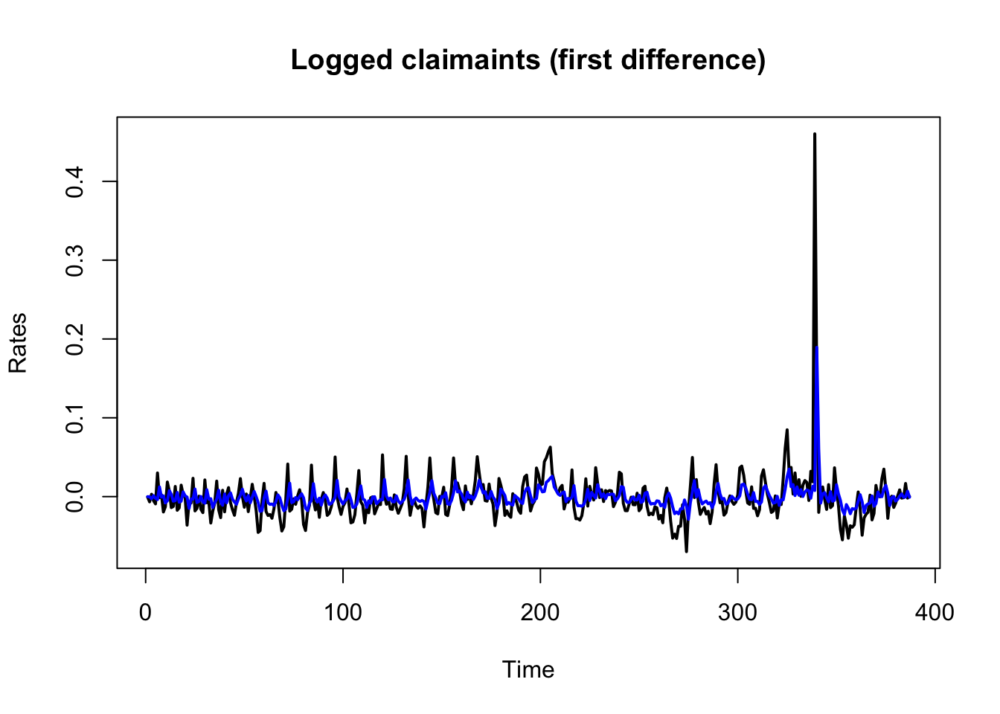
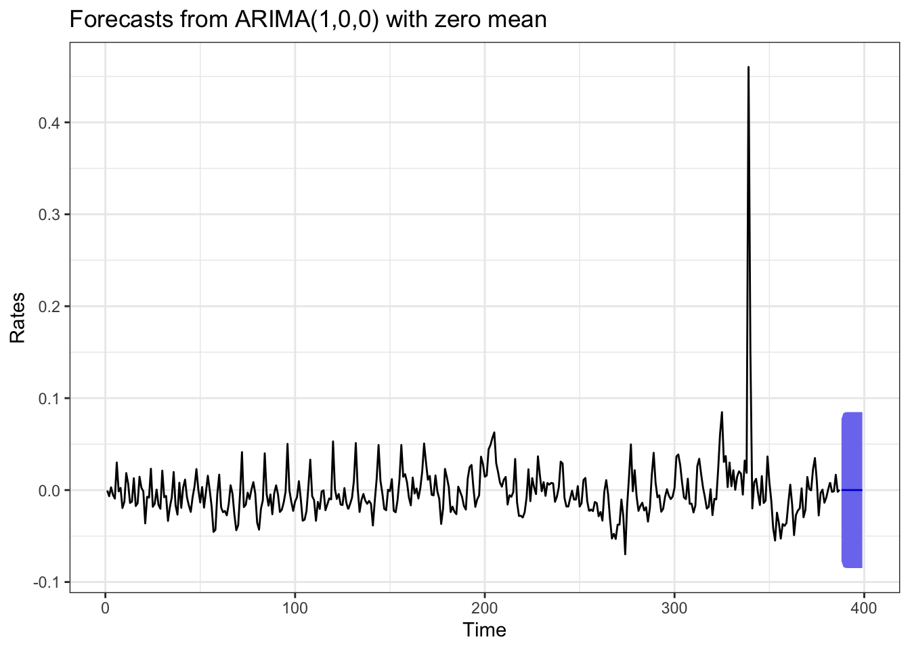
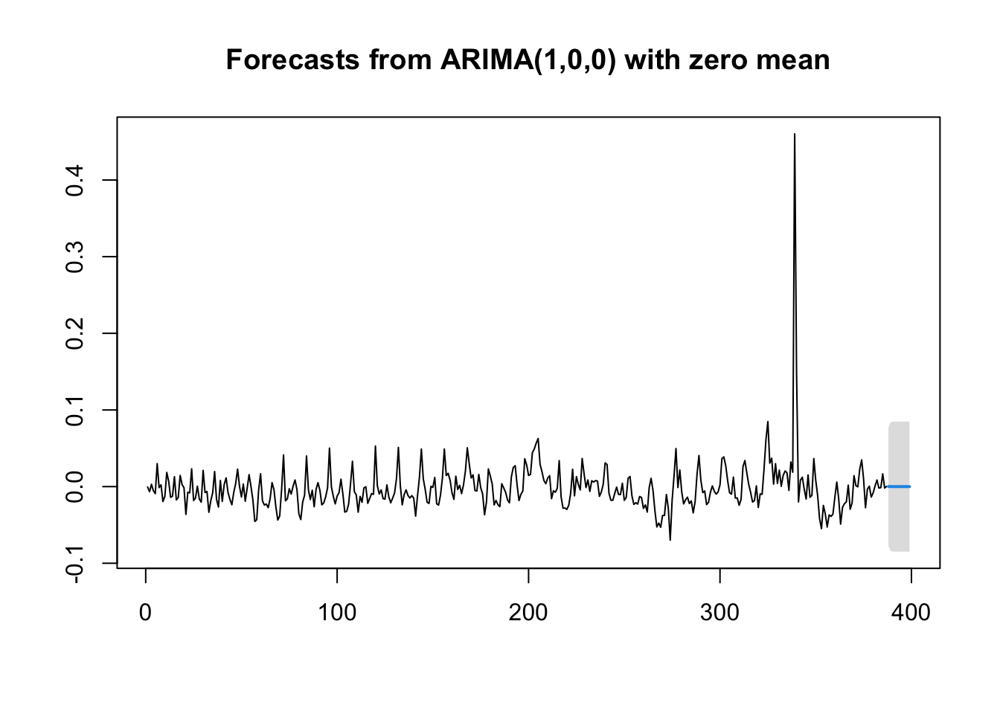

# data manipulation
library(tidyverse)
# plot design / placement
library(patchwork)
library(ggfortify)
# time series modelling
library(forecast)
library(tseries)4 Data modeling
This session will provide an introduction to linear regression and time series modelling in R. It will first explain the fundamentals of regression modelling, including model estimation, interpretation and calibration. Then, it will focus on time series data modelling, particularly the use of ARIMA models.
Time series modeling is an important statistical and computational approach. It is used to analyse and forecast data points that are sequentially ordered in time. Time series modelling captures the underlying patterns and structures in temporal data, allowing for the prediction of future values, identification of trends, and understanding of the dynamics over time. Time series modeling is widely used in various fields, including finance, economics, environmental science, engineering, and healthcare.
4.1 Learning objectives
By the end of today’s session you should be able to:
Understand how to estimate, interpret and calibrate linear regression and ARIMA models;
Be familiar with the main assumptions and challenges of these models;
Use these models to produce predictions.
4.2 Dependencies
4.3 Data
Read and explain data
4.3.1 Out-of-work benefits
Under Universal Credit a broader span of claimants are required to look for work than under Jobseeker’s Allowance. As Universal Credit Full Service is rolled out in particular areas, the number of people recorded as being on the Claimant Count is therefore likely to rise.
- Claimant Count (Experimental Statistics)
-
The Claimant Count is the number of people claiming benefit principally for the reason of being unemployed. This is measured by combining the number of people claiming Jobseeker’s Allowance (JSA) and National Insurance credits with the number of people receiving Universal Credit principally for the reason of being unemployed. Claimants declare that they are out of work, capable of, available for and actively seeking work during the week in which the claim is made.
The measure of the number of people receiving Universal Credit principally for the reason of being unemployed is still being developed by the Department for Work and Pensions. Consequently this component of the total Claimant Count does not yet correctly reflect the target population of unemployed claimants and is subject to revisions. For this reason the Claimant Count is currently designated as Experimental Statistics.
The Claimant Count is mostly derived from DWP administrative systems. For various reasons, e.g. a claimant’s National Insurance number is not known, a small number of claims have to be dealt with manually. These clerical claims do not have as much detail as the computerised claims and therefore, whilst part of the claimant count by sex table, cannot be included the age breakdown.
df_claimants <- read_csv("./data/claimants/claimants_liverpool.csv",
col_types = cols(
date = col_date(format = "%B %Y"),
count = col_number()
)
)
head(df_claimants)# A tibble: 6 × 2
date count
<date> <dbl>
1 1992-01-01 40165
2 1992-02-01 40145
3 1992-03-01 39880
4 1992-04-01 40000
5 1992-05-01 39790
6 1992-06-01 39425- Jobs Density
-
The level of jobs per resident aged 16-64. For example, a job density of 1.0 would mean that there is one job for every resident aged 16-64.
The total number of jobs is a workplace-based measure and comprises employee jobs, self-employed, government-supported trainees and HM Forces. The number of residents aged 16-64 figures used to calculate jobs densities are based on the relevant mid-year population estimates.
df_job.density <- read_csv("./data/job-density/job-density_liverpool.csv",
col_types = cols(
year = col_date(format = "%Y"),
job_density = col_number()
)
)
head(df_job.density)# A tibble: 6 × 2
year job_density
<date> <dbl>
1 2000-01-01 0.762
2 2001-01-01 0.816
3 2002-01-01 0.818
4 2003-01-01 0.819
5 2004-01-01 0.813
6 2005-01-01 0.8144.4 Inspecting the data
Visually explore the data and describe main patterns
p1 <- ggplot(data = df_claimants, aes(x = date, y = count)) +
geom_line(colour = "darkblue", linewidth = 1.5) +
labs(title = "Claimants", x = "Date", y = "Claimant count") +
scale_x_date(date_labels = "%Y", date_breaks = "5 year") +
theme_minimal()p2 <- ggplot(data = df_job.density,
aes(x = year, y = job_density)) +
geom_line(colour = "darkred", linewidth = 1.5) +
labs(title = "Job density", x = "Year", y = "Job density") +
scale_x_date(date_labels = "%Y", date_breaks = "3 year") +
theme_minimal()
p1 + p2
p1 <- ggplot(data = df_claimants %>%
dplyr::filter(date > "2000-01-01" & date < "2022-01-01"),
aes(x = date, y = count)) +
geom_line(colour = "darkblue", linewidth = 1.5) +
labs(title = "Claimants", x = "Date", y = "Claimant count") +
scale_x_date(date_labels = "%Y", date_breaks = "3 year") +
theme_minimal()
p1 + p24.5 Data wrangling
Create a dataset for modelling
df_claimants$year <- year(df_claimants$date)
df_claimants.year <- df_claimants %>%
group_by(year) %>%
summarise( annual_claimants = round( mean(count) ))df_job.density$year2 <- year(df_job.density$year)df_modelling <- left_join(df_claimants.year,
df_job.density,
by = join_by(year == year2)
)
df_modelling <- df_modelling[complete.cases(df_modelling), ]
head(df_modelling)# A tibble: 6 × 4
year annual_claimants year.y job_density
<dbl> <dbl> <date> <dbl>
1 2000 19000 2000-01-01 0.762
2 2001 16846 2001-01-01 0.816
3 2002 15850 2002-01-01 0.818
4 2003 14982 2003-01-01 0.819
5 2004 14255 2004-01-01 0.813
6 2005 14772 2005-01-01 0.8144.6 Linear regression
Explain what a linear regression does and the key components of a linear regression.
\[ y = \alpha + \beta_1 x_1 + \beta_2 x_2 + \beta_3 x_3 + … + \epsilon_i \]
4.6.1 Fitting a model
eq1 <- annual_claimants ~ job_density
lm1 <- lm(eq1,
data = df_modelling)
# estimates
summary(lm1)
Call:
lm(formula = eq1, data = df_modelling)
Residuals:
Min 1Q Median 3Q Max
-5901 -2611 -1126 2872 8978
Coefficients:
Estimate Std. Error t value Pr(>|t|)
(Intercept) 12833 17522 0.732 0.472
job_density 5062 21374 0.237 0.815
Residual standard error: 4341 on 21 degrees of freedom
Multiple R-squared: 0.002664, Adjusted R-squared: -0.04483
F-statistic: 0.0561 on 1 and 21 DF, p-value: 0.81514.6.2 Interpreting linear regression estimates
Visually display what we are doing - not considering the time sequence
ggplot(df_modelling, aes(x = job_density, y = annual_claimants)) +
geom_smooth(method = "lm", se = FALSE, color = "yellow") +
geom_point(color = "darkblue", size = 3, alpha = 0.7) +
labs(title = "Association between claimants vs job density", x = "Job density", y = "Claimants") +
theme_minimal()`geom_smooth()` using formula = 'y ~ x'
4.7 Time series data modelling
For this section, we will return to our original time series of claimants for the period from January 1992 to April 2024. We will illustrate the use of ARIMA models, or Auto-Regressive Integrated Moving Average models. ARIMA is the combination of two models, an autoregressive (\(AR\)) and an moving average (\(MA\)) model. An autoregressive \(AR(p)\) component refers to the use of past values in the regression equation for the series \(y\). The autoregressive parameter \(p\) specifies the number of lags, or past values, to be used in the model. For example, an autoregressive model of order 2 (i.e. \(AR(2)\)) is represented as:
\[ y_t = c + \theta_1 y_{t-1} + \theta_2 y_{t-2} + \epsilon_t \]
where: \(\theta_1\), \(\theta_2\) are model parameters. The moving average nature of the model is represented by the \(q\) value, which is the number of lagged values of the error term. A moving average \(MA(q)\) component represents the error of the model as a combination of previous error terms. The order \(q\) determines the number of terms to include in the model. For example, an moving average model of order 2 (i.e. \(AR(2)\)) is represented as:
\[ y_t = c + \rho_1 e_{t-1} + \rho_2 e_{t-2} + e_t \]
Additionally, a time series needs to be stationary and a non-stationary time series needs to be transform through a procedure known as differencing (\(d\)) or integration (\(I\)). Together, these components (i.e. the autoregressive, integration and moving average components) define the ARIMA model. We will expand on these components later. An ARIMA model is specified by three order parameters: (\(p\), \(d\), \(q\)).
The process of modelling time series is complex task. To facilitate this process, we will use the following a modelling framework of five steps:
time series visualisation
stationarity testing
optimal parameter identification
ARIMA model calibration
model prediction
4.7.1 Visualising time series
A time series has key components that we need to understand to uncover hidden patterns in the data.
Trend: The long-term movement in the data, which can be upward, downward, or constant.
Seasonality: Regular, repeating patterns or cycles in the data that occur at fixed intervals, such as daily, monthly, or annually.
Irregular/Random Fluctuations: Noise or random variations that cannot be attributed to trends, seasonality, or cycles.
# create a time series object
df_claimants_ts <- ts(df_claimants$count,
start = c(1992, 1),
end = c(2024, 4),
frequency = 12)
# decompose time series
decompose_ts <- decompose(df_claimants_ts)
# plot time series components
plot(decompose_ts)
What do we learn from the plots? There are clear trends, seasonality and random variation, but also a spike during 2020 and 2021.
4.7.2 Stationarity
Stationarity is a critical property in time series analysis.
What is stationary? Stationary means that the mean, variance and covariance should be constant over time; that is, the mean, variance and covariance of the time series should not be a function of time.
Why do we care about stationarity? We care about stationarity because we cannot build a time series model if the time series is non-stationary. Non-stationary data can lead to misleading statistical inferences, so it is often necessary to transform non-stationary data into a stationary form before further analysis.
How do we transform a time series from non-stationary data into a stationary? There are three commonly used ways to achieve this.
- Detrending: Detrending involves removing the trend component from the time series. That would be removing the trend component shown in the plot above from the time series and building a model with the rest.
- Differencing: Differencing is probably the most commonly used technique to remove non-stationarity. Differentiation is used to make a time series stationary by removing trends and seasonality. The differencing operation subtracts the previous value from the current value. Differencing is also known as for being the integration part in ARIMA models. Differencing involves in taking the difference between \(y_t\) and \(y_t-1\).
- Seasonality: Seasonality corresponds to the periodic cycles of changes in a time series and can be integrated via the autoregressive (AR) and moving average (MA) terms in ARIMA models
So we will use differencing and then test for stationarity.
How we know if a time series is stationary? We can use statistical tests to identify if a time series is stationary. We will the Augmented Dickey-Fuller (ADF) test which is a statistical test used to determine whether a given time series is stationary. The primary purpose of the ADF test is to check for the presence of a unit root in a time series sample; that is, if the time series is nonstationary and exhibits a stochastic trend. Essentially, a time series with a unit root shows that its values are heavily influenced by its own past values and that shocks or changes to the series have a permanent effect, rather than temporary. If the test rejects the null hypothesis, it suggests that the time series is stationary.
adf.test(diff(log(df_claimants$count)),
alternative = "stationary",
k=0)
Augmented Dickey-Fuller Test
data: diff(log(df_claimants$count))
Dickey-Fuller = -12.742, Lag order = 0, p-value = 0.01
alternative hypothesis: stationaryThe Dickey-Fuller test returns a p-value of 0.01, resulting in the rejection of the null hypothesis in favour of the alternate. That is that the time series is stationary. Note that we used a log transformation. This transformation is applied to stabilise the variance and normalise the distribution of the data. Taking the logarithm of the claimants means that multiplicative relationships in the original time series become additive.
4.7.3 Optimal parameters
Next we need examine the Auto-Correlation Function (ACF) and the Partial Auto-Correlation Function (PACF) to identify appropriate values for \(p\) and \(q\). Thus, we examine these functions to identify which \(AR(p)\) , \(MA(q)\), \(ARMA(p, q)\) or \(ARIMA(p, d, q)\) model is more appropriate.
ACF is used to determine the level of autocorrelation between \(y_t\) and \(y_{t-k}\) for different values of \(k\). The ACF tells us how the present value in a time series is related with its past values. It helps identify the presence of any repeating patterns or relationships over different lags. Thus, ACF will help determining the number, or order, of moving-average (MA) coefficients for ARIMA models.
PACF measures partial autocorrelations between \(y_t\) and \(y_{t-k}\) after removing the effects of lags 1, 2, 3, … , k - 1. This helps identify the direct relationships between observations separated by various lag periods. Thus, PACF helps us identify the number of autoregressive (AR) coefficients in our ARIMA model.
The figures below show ACF and PACF plots for our data to determine the order of parameters for our ARIMA model.
acf(diff(log(df_claimants$count)))
pacf(diff(log(df_claimants$count)))
Hyndman and Athanasopoulos (2021) describe the usefulness of ACF and PACF plots. They suggest that a time series may correspond to an ARIMA( \(p\), \(d\), 0) model if the ACF and PACF plots of the differenced time series show the following patterns:
the ACF has an exponential decay or sine curve form;
there is a significant spike at lag \(p\) in the PACF, but none beyond lag \(p\).
Similarly, they state that a time series may follow an ARIMA(0, \(d\), \(q\)) model if the ACF and PACF plots of the differenced time series show the following patterns:
the PACF has an exponential decay or sine curve form;
there is a significant spike at lag \(q\) in the ACF, but none beyond lag \(q\).
In the ACF and PACF plots above, we observe a significant spike at lag 1 in the PACF plot followed by non-significant spikes suggests that an autoregressive (AR) component of order 1 is appropriate. Significant spikes at lags 1 and 2 in the ACF plot suggest that a moving average (MA) component of order 2 might be appropriate. Additionally, a significant spike at lag 12 in both ACF and PACF indicates the presence of a seasonal component with a period of 12. This suggests that the time series may have an annual seasonal pattern if the data is monthly. However, we will first concentrate on the ARIMA model (1, 0, 2) to illustrate the calibration of this type of models, and also because we generally prefer parsimonious models, and as you will see, a simpler model seems to provide the optimal AR and MA parameters with no integration at lag 12. Though, note that our model has one integration as we have differentiated our time series.
4.7.4 ARIMA model calibration
Let us fit the ARIMA (1, 0, 2) model using the arima function:
# fit model
arima_m1 <- arima(diff(log(df_claimants$count)), c(1, 0, 2))
# estimates
summary(arima_m1)
Call:
arima(x = diff(log(df_claimants$count)), order = c(1, 0, 2))
Coefficients:
ar1 ma1 ma2 intercept
0.8818 -0.4644 -0.2839 -0.0019
s.e. 0.0824 0.0995 0.0636 0.0032
sigma^2 estimated as 0.0008907: log likelihood = 809.8, aic = -1609.6
Training set error measures:
ME RMSE MAE MPE MAPE MASE ACF1
Training set -1.357069e-05 0.02984486 0.01579798 -Inf Inf 0.8246125 0.01209695
Note
Note that the arima_m1 is the same that fitting the following model:
arima( log(df_claimants$count) ), c(1, 1, 2) )
That is not differencing the time series using diff before the log
Interpretation
A key point to note is that when interpreting the AR(1) and MA(1) coefficients in the context of a differenced logged time series, the focus is on the percentage changes rather than the absolute changes. Thus, the estimated coefficient of 0.8818 for ar1 term indicates that 88.18% of the percentage change in claimants from the previous period carries over to the current period. The sign is positive indicating that the concurrent count of claimants is strongly influenced by the the claimants from the previous period (i.e. lag 1). In other words, if claimants increased by 10% last month (after taking logs and differencing), this month’s claimants would increase by approximately 8.82% (88.18% of 10%), assuming other factors remain constant. This reflects strong persistence in the growth rates of claimants.
In terms of the MA terms, their estimated coefficients signal the temporal dependence of an unexpected change in the outcome from a previous period on the concurrent outcome. The MA(1) coefficient of -0.4644 indicates that an unexpected change (shock) in claimaints from the previous period has a negative effect on the current period’s percentage change in claimaints. If there was an unexpected increase in claimaints last month, this month’s percentage change in claimaints will be reduced by 46.44% of that shock. In other words, if there was an unexpected 5% increase in claimaints last month, this month’s sales would be expected to decrease by approximately 2.32% (-0.4644 * 5%), indicating a partial correction of the previous unexpected increase.
Model performance
How do we know we have chosen the best model? The Akaike information criterion (AIC) score is a good indicator of the ARIMA model accuracy. The lower the AIC score, the better the model performs. Our model produced an AIC score of -1609. However, we can only know if we have selected the best model through iterated experimentation. We can randomly experiment with the parameters until we find parameters that yield the lowest AIC.
Auto ARIMA
To this end, we can use a built-in function in the forecast package called auto.arima. The function returns the best-fitting ARIMA model according to either AIC, AICc or BIC value. The function conducts a search over possible model within the order constraints provided - see ?auto.arima for more information.
autoarima_m1 <- auto.arima(diff(log(df_claimants$count)), trace=TRUE)
Fitting models using approximations to speed things up...
ARIMA(2,0,2) with non-zero mean : Inf
ARIMA(0,0,0) with non-zero mean : -1540.47
ARIMA(1,0,0) with non-zero mean : -1608.778
ARIMA(0,0,1) with non-zero mean : -1606.811
ARIMA(0,0,0) with zero mean : -1541.104
ARIMA(2,0,0) with non-zero mean : -1607.388
ARIMA(1,0,1) with non-zero mean : -1608.528
ARIMA(2,0,1) with non-zero mean : -1605.537
ARIMA(1,0,0) with zero mean : -1610.231
ARIMA(2,0,0) with zero mean : -1608.789
ARIMA(1,0,1) with zero mean : -1609.917
ARIMA(0,0,1) with zero mean : -1608.005
ARIMA(2,0,1) with zero mean : -1606.965
Now re-fitting the best model(s) without approximations...
ARIMA(1,0,0) with zero mean : -1611.047
Best model: ARIMA(1,0,0) with zero mean The algorithm indicates that the best ARIMA model is achieved with parameters p=1, d=0, q=0.
Note
auto.arima generates models with non-zero mean and zero mean.
A non-zero mean model indicates that the model has a constant term (\(c\)) or a drift term (\(d\)) if \(d > 0\). For a non-differenced series (\(d = 0\)), the constant term is a true intercept, representing the mean level around which the series fluctuates. For a differenced series (\(d > 0\)), the constant term can be interpreted as a drift, representing the average change per time period in the differenced series.
A zero mean model indicates that the model does not has a constant term. It assumes that the time series fluctuates around a mean of zero if \(d = 0\). For a differenced series (\(d > 0\)), this implies no deterministic trend (drift) in the data. This model is appropriate for stationary time series data that fluctuates around a mean of zero without a trend.
Let us fit the ARIMA (1, 0, 0) model with zero mean:
# fit model
arima_m2 <- arima(diff(log(df_claimants$count)), c(1, 0, 0), include.mean = FALSE)
# estimates
summary(arima_m2)
Call:
arima(x = diff(log(df_claimants$count)), order = c(1, 0, 0), include.mean = FALSE)
Coefficients:
ar1
0.4114
s.e. 0.0462
sigma^2 estimated as 0.0009013: log likelihood = 807.54, aic = -1611.08
Training set error measures:
ME RMSE MAE MPE MAPE MASE ACF1
Training set -0.001159562 0.03002149 0.01625172 -Inf Inf 0.8482966 0.025589014.7.5 Prediction
Now that we have identified our best fitting ARIMA model, we can use the model to make predictions of claimant counts into the future. But, before we do this let us see how our model fitted our data.
plot(as.ts(diff(log(df_claimants$count))), main = "Logged claimaints (first difference)", ylab = "Rates", xlab = "Time", type = "l", lty = 1, lwd = 2)
lines(fitted(arima_m2), col= "blue", lwd = 2)
The model seems to have fitted our data relatively well, even the spike in claimants during 2020 and 2021. Let us now make a prediction of future claimants with the forecast.Arima function. We predict the claimants on the next 12 months:
arima_m2 %>%
forecast(h = 12,
level = c(99)) %>% #confidence level 99%
autoplot() +
theme_bw() +
labs( y = "Rates", x = "Time")
futurVal <- forecast(arima_m2,h=12, level=c(99))
plot(forecast(futurVal))